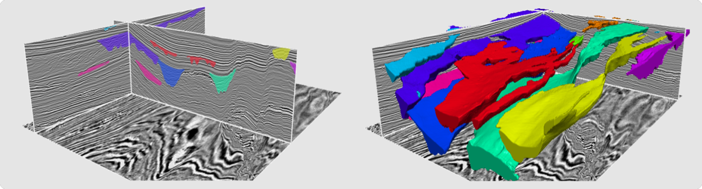
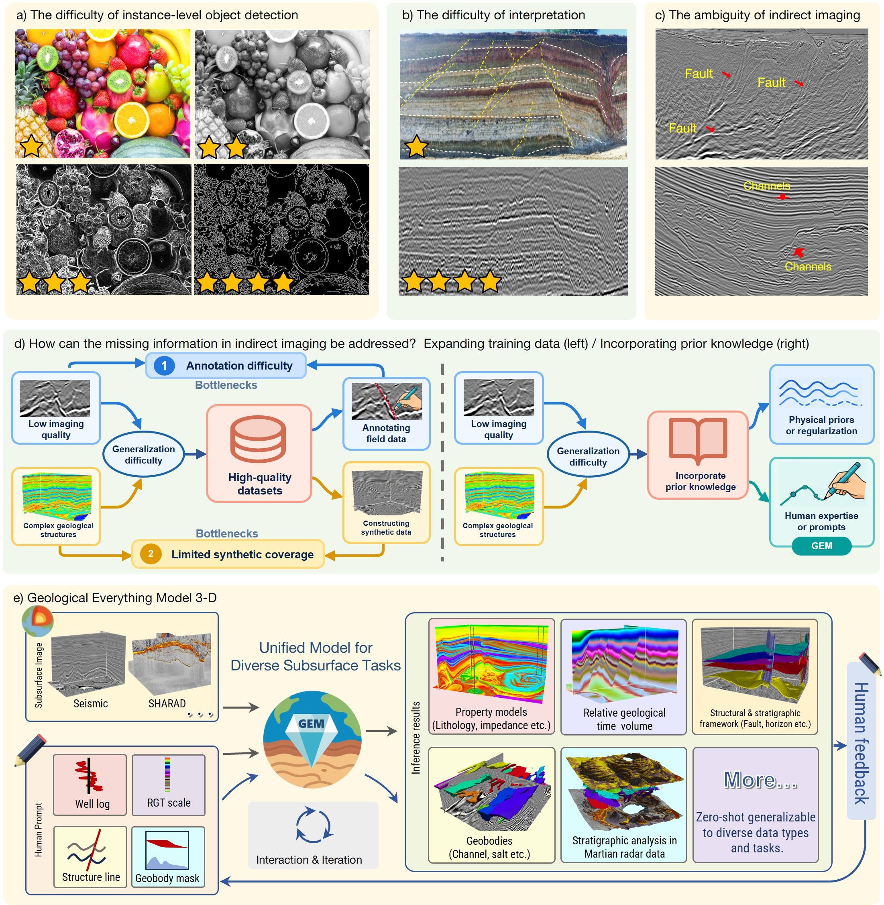
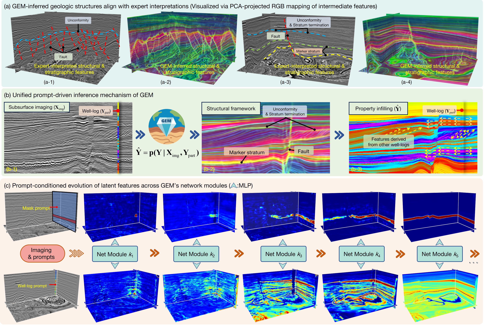
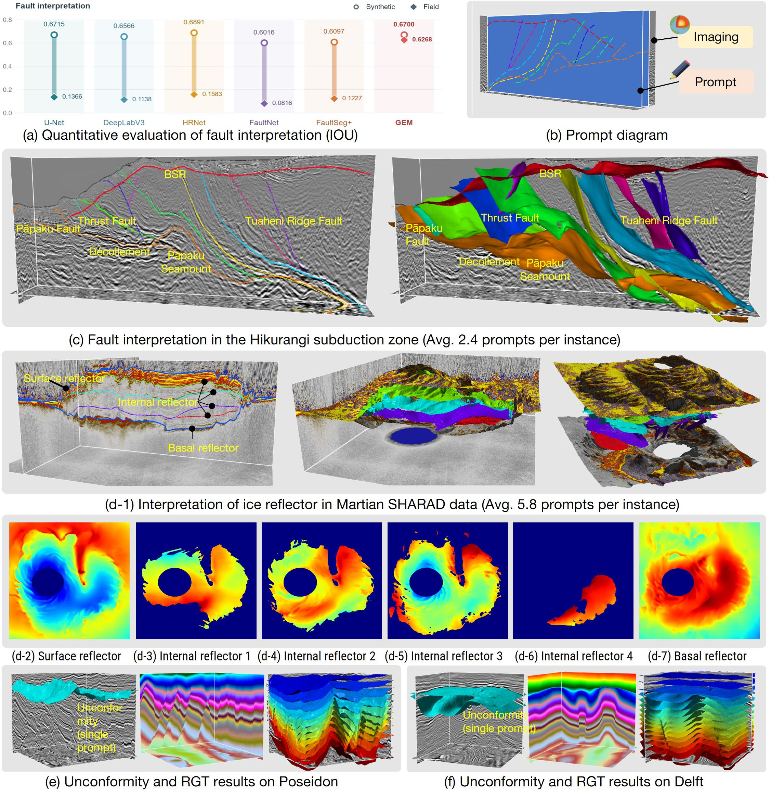
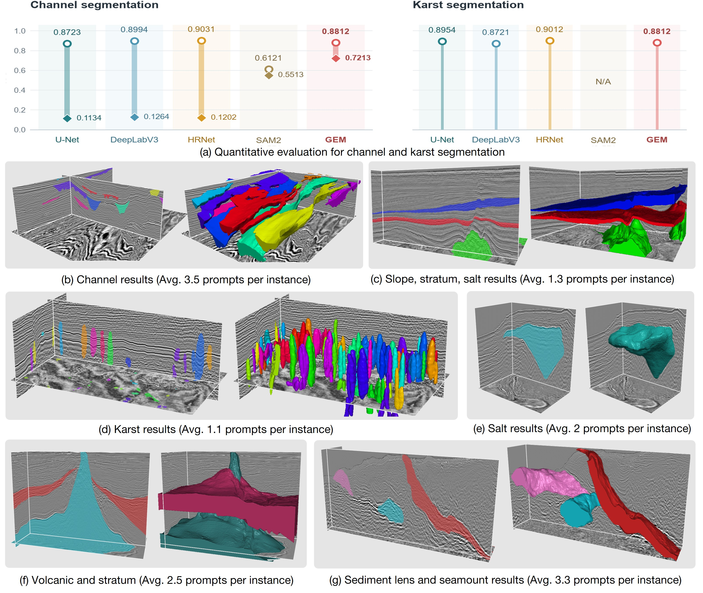
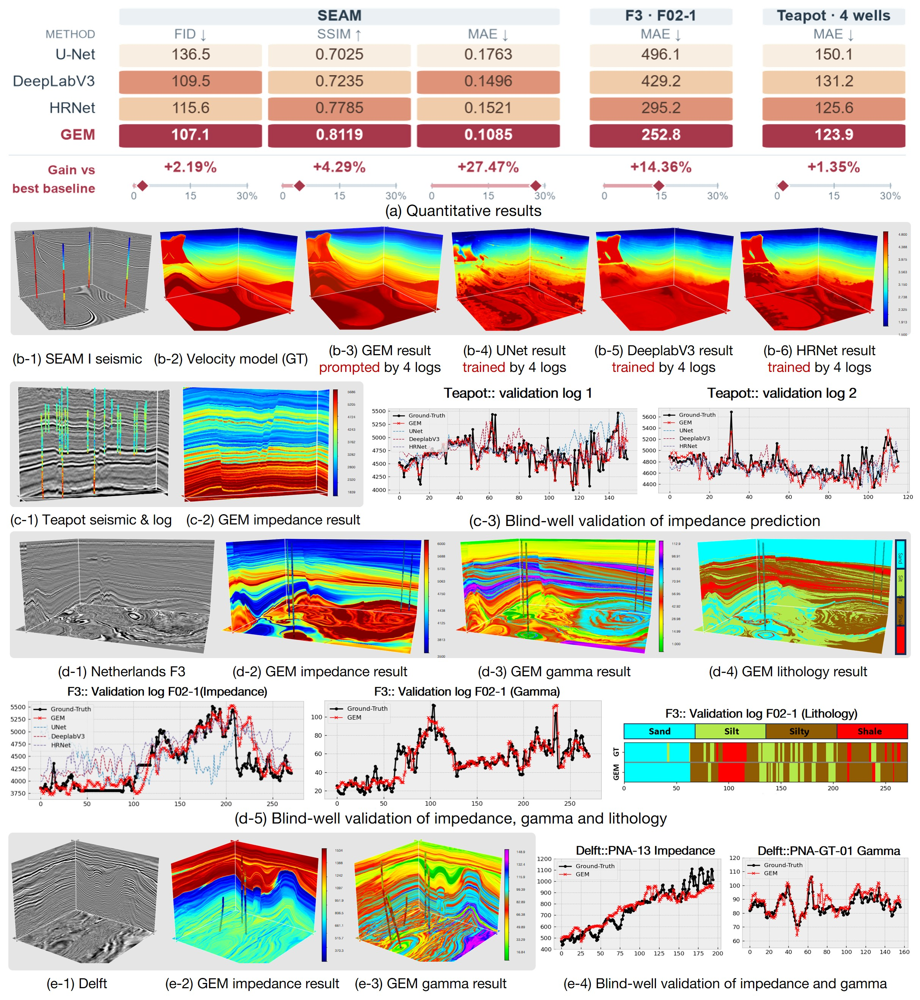
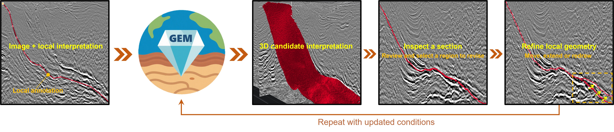

Faults & bottom-simulating reflector
Trace local interfaces, extend them in 3D, and refine fault and BSR interpretations.
Download videoUnified Interactive Inference through Target-Conditioned Representations
One model connects imaging data with local interpretations and measurements to infer structures, geological bodies, and physical properties.

Images provide spatial context. Local conditions supply the identity, geometry, or value of the target.
GEM brings these inputs together from the start of three-dimensional feature extraction. Interpretation lines, membership masks, relative stratigraphic coordinates, and well logs guide a shared backbone and output head.
Across the reported applications, model weights remain fixed. Interpreters can add, replace, or withdraw conditions and revisit earlier results as their understanding develops.
Scientific imaging requires the inference of spatial objects, geometric boundaries, and continuous properties from limited observations. Some tasks in medical imaging, remote sensing, and subsurface imaging share the challenges of missing observations and target ambiguity: high-dimensional data and large-scale training do not necessarily supply all the information needed to determine a target. Local annotations, domain interpretations, and independent measurements can provide additional target constraints. An important question is how these heterogeneous conditions can form representations jointly with observations, enabling one model to infer different targets and revise its predictions. We propose Geological Everything Model 3D (GEM), which explores unified three-dimensional interactive inference through target-conditioned representations. Object membership, geometric relationships, and measured values are encoded as local conditions and supplied with observations to a three-dimensional backbone, allowing conditions to participate in feature extraction from the input stage. Multitask joint training brings discrete object recognition and continuous field estimation into a common conditional prediction interface. An interactive workflow allows conditions to be accumulated, revised, and revisited. Adding, replacing, or withdrawing conditions updates candidate results while retaining valid historical constraints, enabling continued inference with fixed model parameters. Subsurface imaging serves as the principal validation setting, where complex three-dimensional structures, diverse targets, and sparse constraints provide a challenging test. Synthetic benchmarks, field surveys, and blind-well evaluations demonstrate applications to fault and horizon interpretation, geobody identification, stratigraphic coordinates, and physical property estimation. GEM outperforms the compared baselines on field fault slices and some tasks constrained by well logs, whereas specialized models retain advantages on some synthetic tasks, indicating that the benefits depend on the setting. A Martian radar example provides exploratory evidence for application across imaging modalities. These results support the feasibility of the approach for subsurface interpretation and modeling. This work provides an approach to unified modeling and interactive revision for heterogeneous target inference under insufficient observations, with potential extensions to medical imaging and other remote-sensing tasks.
Seismic or radar observations supply three-dimensional spatial cues.
Interpretations and measurements specify the current target.
Inspect predictions and update conditions while retaining valid constraints.
Six narrated workflows, from seismic structures to Martian radar layers. English voice · Chinese & English subtitles.
Showing all 6 demonstrations
Trace local interfaces, extend them in 3D, and refine fault and BSR interpretations.
Download videoSwitch between structural interfaces and geological bodies within the same seismic volume.
Download videoUse local membership masks to identify channels and revise their three-dimensional extent.
Download videoSpecify a channel on a local section and inspect its spatial continuation through the volume.
Download videoExplore reflection-interface interpretation in planetary radar imaging.
Download videoWell-log conditions anchor local values; seismic data provide spatial context for the surrounding property field.
Well-log values constrain a continuous property field within the seismic volume.
Download videoEstimate spatial property variation from seismic context and local well measurements.
Download videoExtend local sonic-log constraints through the surrounding three-dimensional image.
Download videoSynthetic benchmarks, field interpretations, and blind-well evaluations. Open any figure to inspect the original image.
20 expert-annotated slices from Hikurangi and Baiyun.
30 annotated field slices from Parihaka and Romney.
F3 F02-1 acoustic impedance, relative to the best compared baseline.
Performance depends on the setting: specialized models retain advantages on some synthetic tasks. Comparisons use the adaptation workflows described in the manuscript; the Martian example is exploratory.

Local knowledge and measurements supply target information alongside three-dimensional observations.

Shared features respond to different local conditions. Feature-projection colors are not confidence scores.

Faults, reflection interfaces, Martian radar layers, unconformities, and relative geological time.

Channels, salt, karst, volcanic units, and sediment bodies selected through local membership masks.

Synthetic full-field evaluation and field predictions assessed at held-out blind wells.

Accumulate, revise, or withdraw conditions while keeping valid historical constraints.
Geological Everything Model 3D: Unified Interactive Inference through Target-Conditioned Representations
The latest manuscript includes Supplementary Information. The arXiv link points to the earlier 2025 preprint.
@article{dou2025gem,
title={Geological Everything Model 3D:
A Promptable Foundation Model for Unified
and Zero-Shot Subsurface Understanding},
author={Dou, Yimin and Wu, Xinming and
Bangs, Nathan L. and Sethi, Harpreet Singh and
Li, Jintao and Gao, Hang and Guo, Zhixiang},
journal={arXiv preprint arXiv:2507.00419},
year={2025}
}